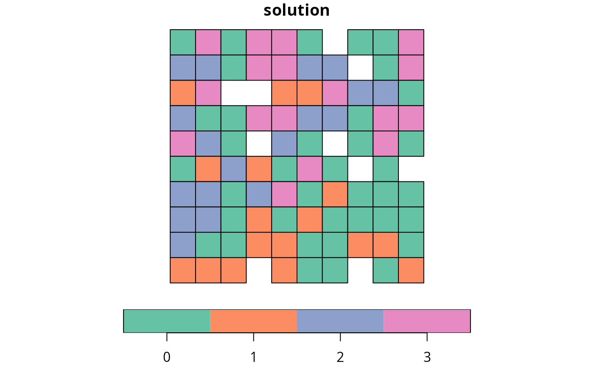
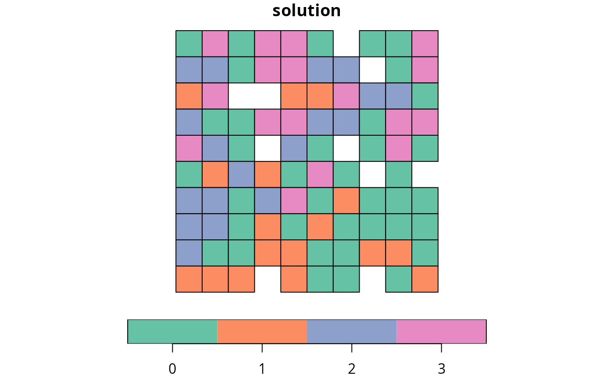

Calculate the exposed boundary length (perimeter) associated with a
solution to a conservation planning problem().
This summary statistic is useful for evaluating the spatial fragmentation of
planning units selected within a solution.
eval_boundary_summary(x, ...)
# S3 method for default
eval_boundary_summary(x, ...)
# S3 method for ConservationProblem
eval_boundary_summary(
x,
solution,
edge_factor = rep(0.5, number_of_zones(x)),
zones = diag(number_of_zones(x)),
data = NULL,
...
)Arguments
- x
problem()(i.e.,ConservationProblem) object.- ...
not used.
- solution
numeric,matrix,data.frame,Raster,Spatial, orsf::sf()object. The argument should be in the same format as the planning unit cost data in the argument tox. See the Solution format section for more information.- edge_factor
numericproportion to scale planning unit edges (borders) that do not have any neighboring planning units. For example, an edge factor of0.5is commonly used to avoid overly penalizing planning units along a coastline. Note that this argument must have an element for each zone in the argument tox.- zones
matrixorMatrixobject describing the clumping scheme for different zones. Each row and column corresponds to a different zone in the argument tox, and cell values indicate the relative importance of clumping planning units that are allocated to a combination of zones. Cell values along the diagonal of the matrix represent the relative importance of clumping planning units that are allocated to the same zone. Cell values must range between 1 and -1, where negative values favor solutions that spread out planning units. The default argument tozonesis an identity matrix (i.e., a matrix with ones along the matrix diagonal and zeros elsewhere), so that penalties are incurred when neighboring planning units are not assigned to the same zone. If the cells along the matrix diagonal contain markedly smaller values than those found elsewhere in the matrix, then solutions are preferred that surround planning units with those allocated to different zones (i.e., greater spatial fragmentation).- data
NULL,data.frame,matrix, orMatrixobject containing the boundary data. These data describe the total amount of boundary (perimeter) length for each planning unit, and the amount of boundary (perimeter) length shared between different planning units (i.e., planning units that are adjacent to each other). See the Data format section for more information.
Value
tibble::tibble() object containing the boundary length of the
solution.
It contains the following columns:
- summary
characterdescription of the summary statistic. The statistic associated with the"overall"value in this column is calculated using the entire solution (including all management zones if there are multiple zones). If multiple management zones are present, then summary statistics are also provided for each zone separately (indicated using zone names).- boundary
numericexposed boundary length value. Greater values correspond to solutions with greater boundary length and, in turn, greater spatial fragmentation. Thus conservation planning exercises typically prefer solutions with smaller values.
Details
This summary statistic is equivalent to the Connectivity_Edge metric
reported by the Marxan software
(Ball et al. 2009).
It is calculated using the same equations used to penalize solutions
according to their total exposed boundary (i.e., add_boundary_penalties()).
See the Examples section for examples on how differences zone arguments
can be used to calculate boundaries for different combinations of zones.
Data format
The argument to data can be specified using the following formats.
Note that boundary data must always describe symmetric relationships
between planning units.
dataas aNULLvalueindicating that the data should be automatically calculated using the
boundary_matrix()function. This argument is the default. Note that the boundary data must be supplied using one of the other formats below if the planning unit data in the argument toxdo not explicitly contain spatial information (e.g., planning unit data are adata.frameornumericclass).dataas amatrix/Matrixobjectwhere rows and columns represent different planning units and the value of each cell represents the amount of shared boundary length between two different planning units. Cells that occur along the matrix diagonal represent the amount of exposed boundary associated with each planning unit that has no neighbor (e.g., these value might pertain to boundaries along a coastline).
dataas adata.frameobjectwith the columns
"id1","id2", and"boundary". The"id1"and"id2"columns contain identifiers (indices) for a pair of planning units, and the"boundary"column contains the amount of shared boundary length between these two planning units. This format follows the the standard Marxan format for boundary data (i.e., per the "bound.dat" file).
Solution format
Broadly speaking, the argument to solution must be in the same format as
the planning unit data in the argument to x.
Further details on the correct format are listed separately
for each of the different planning unit data formats:
xhasnumericplanning unitsThe argument to
solutionmust be anumericvector with each element corresponding to a different planning unit. It should have the same number of planning units as those in the argument tox. Additionally, any planning units missing cost (NA) values should also have missing (NA) values in the argument tosolution.xhasmatrixplanning unitsThe argument to
solutionmust be amatrixvector with each row corresponding to a different planning unit, and each column correspond to a different management zone. It should have the same number of planning units and zones as those in the argument tox. Additionally, any planning units missing cost (NA) values for a particular zone should also have a missing (NA) values in the argument tosolution.xhasRasterplanning unitsThe argument to
solutionbe aRasterobject where different grid cells (pixels) correspond to different planning units and layers correspond to a different management zones. It should have the same dimensionality (rows, columns, layers), resolution, extent, and coordinate reference system as the planning units in the argument tox. Additionally, any planning units missing cost (NA) values for a particular zone should also have missing (NA) values in the argument tosolution.xhasdata.frameplanning unitsThe argument to
solutionmust be adata.framewith each column corresponding to a different zone, each row corresponding to a different planning unit, and cell values corresponding to the solution value. This means that if adata.frameobject containing the solution also contains additional columns, then these columns will need to be subsetted prior to using this function (see below for example withsf::sf()data). Additionally, any planning units missing cost (NA) values for a particular zone should also have missing (NA) values in the argument tosolution.xhasSpatialplanning unitsThe argument to
solutionmust be aSpatialobject with each column corresponding to a different zone, each row corresponding to a different planning unit, and cell values corresponding to the solution value. This means that if theSpatialobject containing the solution also contains additional columns, then these columns will need to be subsetted prior to using this function (see below for example withsf::sf()data). Additionally, the argument tosolutionmust also have the same coordinate reference system as the planning unit data. Furthermore, any planning units missing cost (NA) values for a particular zone should also have missing (NA) values in the argument tosolution.xhassf::sf()planning unitsThe argument to
solutionmust be asf::sf()object with each column corresponding to a different zone, each row corresponding to a different planning unit, and cell values corresponding to the solution value. This means that if thesf::sf()object containing the solution also contains additional columns, then these columns will need to be subsetted prior to using this function (see below for example). Additionally, the argument tosolutionmust also have the same coordinate reference system as the planning unit data. Furthermore, any planning units missing cost (NA) values for a particular zone should also have missing (NA) values in the argument tosolution.
References
Ball IR, Possingham HP, and Watts M (2009) Marxan and relatives: Software for spatial conservation prioritisation in Spatial conservation prioritisation: Quantitative methods and computational tools. Eds Moilanen A, Wilson KA, and Possingham HP. Oxford University Press, Oxford, UK.
See also
See summaries for an overview of all functions for summarizing solutions.
Also, see add_boundary_penalties() to penalize solutions with high
boundary length.
Other summaries:
eval_connectivity_summary(),
eval_cost_summary(),
eval_feature_representation_summary(),
eval_n_summary(),
eval_target_coverage_summary()
Examples
# \dontrun{
# set seed for reproducibility
set.seed(500)
# load data
data(sim_pu_raster, sim_pu_sf, sim_features,
sim_pu_zones_sf, sim_features_zones)
# build minimal conservation problem with raster data
p1 <- problem(sim_pu_raster, sim_features) %>%
add_min_set_objective() %>%
add_relative_targets(0.1) %>%
add_binary_decisions() %>%
add_default_solver(verbose = FALSE)
# solve the problem
s1 <- solve(p1)
# print solution
print(s1)
#> class : RasterLayer
#> dimensions : 10, 10, 100 (nrow, ncol, ncell)
#> resolution : 0.1, 0.1 (x, y)
#> extent : 0, 1, 0, 1 (xmin, xmax, ymin, ymax)
#> crs : NA
#> source : memory
#> names : layer
#> values : 0, 1 (min, max)
#>
# plot solution
plot(s1, main = "solution", axes = FALSE, box = FALSE)

# calculate boundary associated with the solution
r1 <- eval_boundary_summary(p1, s1)
print(r1)
#> # A tibble: 1 × 2
#> summary boundary
#> <chr> <dbl>
#> 1 overall 2.25
# build minimal conservation problem with polygon (sf) data
p2 <- problem(sim_pu_sf, sim_features, cost_column = "cost") %>%
add_min_set_objective() %>%
add_relative_targets(0.1) %>%
add_binary_decisions() %>%
add_default_solver(verbose = FALSE)
# solve the problem
s2 <- solve(p2)
# print first six rows of the attribute table
print(head(s2))
#> Simple feature collection with 6 features and 4 fields
#> Geometry type: POLYGON
#> Dimension: XY
#> Bounding box: xmin: 0 ymin: 0.9 xmax: 0.6 ymax: 1
#> CRS: NA
#> cost locked_in locked_out solution_1 geometry
#> 1 215.8638 FALSE FALSE 0 POLYGON ((0 1, 0.1 1, 0.1 0...
#> 2 212.7823 FALSE FALSE 0 POLYGON ((0.1 1, 0.2 1, 0.2...
#> 3 207.4962 FALSE FALSE 0 POLYGON ((0.2 1, 0.3 1, 0.3...
#> 4 208.9322 FALSE TRUE 0 POLYGON ((0.3 1, 0.4 1, 0.4...
#> 5 214.0419 FALSE FALSE 0 POLYGON ((0.4 1, 0.5 1, 0.5...
#> 6 213.7636 FALSE FALSE 0 POLYGON ((0.5 1, 0.6 1, 0.6...
# plot solution
plot(s2[, "solution_1"])
 # calculate boundary associated with the solution
r2 <- eval_boundary_summary(p2, s2[, "solution_1"])
print(r2)
#> # A tibble: 1 × 2
#> summary boundary
#> <chr> <dbl>
#> 1 overall 2.05
# build multi-zone conservation problem with polygon (sf) data
p3 <- problem(sim_pu_zones_sf, sim_features_zones,
cost_column = c("cost_1", "cost_2", "cost_3")) %>%
add_min_set_objective() %>%
add_relative_targets(matrix(runif(15, 0.1, 0.2), nrow = 5,
ncol = 3)) %>%
add_binary_decisions() %>%
add_default_solver(verbose = FALSE)
# solve the problem
s3 <- solve(p3)
# print first six rows of the attribute table
print(head(s3))
#> Simple feature collection with 6 features and 9 fields
#> Geometry type: POLYGON
#> Dimension: XY
#> Bounding box: xmin: 0 ymin: 0.9 xmax: 0.6 ymax: 1
#> CRS: NA
#> cost_1 cost_2 cost_3 locked_1 locked_2 locked_3 solution_1_zone_1
#> 1 215.8638 183.3344 205.4113 FALSE FALSE FALSE 0
#> 2 212.7823 189.4978 209.6404 FALSE FALSE FALSE 0
#> 3 207.4962 193.6007 215.4212 TRUE FALSE FALSE 0
#> 4 208.9322 197.5897 218.5241 FALSE FALSE FALSE 0
#> 5 214.0419 199.8033 220.7100 FALSE FALSE FALSE 0
#> 6 213.7636 203.1867 224.6809 FALSE FALSE FALSE 0
#> solution_1_zone_2 solution_1_zone_3 geometry
#> 1 0 0 POLYGON ((0 1, 0.1 1, 0.1 0...
#> 2 0 1 POLYGON ((0.1 1, 0.2 1, 0.2...
#> 3 0 0 POLYGON ((0.2 1, 0.3 1, 0.3...
#> 4 0 1 POLYGON ((0.3 1, 0.4 1, 0.4...
#> 5 0 1 POLYGON ((0.4 1, 0.5 1, 0.5...
#> 6 0 0 POLYGON ((0.5 1, 0.6 1, 0.6...
# create new column representing the zone id that each planning unit
# was allocated to in the solution
s3$solution <- category_vector(
s3[, c("solution_1_zone_1", "solution_1_zone_2", "solution_1_zone_3")])
s3$solution <- factor(s3$solution)
# plot solution
plot(s3[, "solution"])

# calculate boundary associated with the solution
# here we will use the default argument for zones which treats each
# zone as completely separate, meaning that the "overall"
# boundary is just the sum of the boundaries for each zone
r3 <- eval_boundary_summary(
p3, s3[, c("solution_1_zone_1", "solution_1_zone_2", "solution_1_zone_3")])
print(r3)
#> # A tibble: 4 × 2
#> summary boundary
#> <chr> <dbl>
#> 1 overall 14.2
#> 2 zone_1 4.7
#> 3 zone_2 4.9
#> 4 zone_3 4.6
# let's calculate the overall exposed boundary across the entire
# solution, assuming that the shared boundaries between planning
# units allocated to different zones "count" just as much
# as those for planning units allocated to the same zone
# in other words, let's calculate the overall exposed boundary
# across the entire solution by "combining" all selected planning units
# together (regardless of which zone they are allocated to in the solution)
r3_combined <- eval_boundary_summary(
p3, zones = matrix(1, ncol = 3, nrow = 3),
s3[, c("solution_1_zone_1", "solution_1_zone_2", "solution_1_zone_3")])
print(r3_combined)
#> # A tibble: 4 × 2
#> summary boundary
#> <chr> <dbl>
#> 1 overall 8.80
#> 2 zone_1 4.7
#> 3 zone_2 4.9
#> 4 zone_3 4.6
# we can see that the "overall" boundary is now less than the
# sum of the individual zone boundaries, because it does not
# consider the shared boundary between two planning units allocated to
# different zones as "exposed" when performing the calculations
# }
# calculate boundary associated with the solution
r2 <- eval_boundary_summary(p2, s2[, "solution_1"])
print(r2)
#> # A tibble: 1 × 2
#> summary boundary
#> <chr> <dbl>
#> 1 overall 2.05
# build multi-zone conservation problem with polygon (sf) data
p3 <- problem(sim_pu_zones_sf, sim_features_zones,
cost_column = c("cost_1", "cost_2", "cost_3")) %>%
add_min_set_objective() %>%
add_relative_targets(matrix(runif(15, 0.1, 0.2), nrow = 5,
ncol = 3)) %>%
add_binary_decisions() %>%
add_default_solver(verbose = FALSE)
# solve the problem
s3 <- solve(p3)
# print first six rows of the attribute table
print(head(s3))
#> Simple feature collection with 6 features and 9 fields
#> Geometry type: POLYGON
#> Dimension: XY
#> Bounding box: xmin: 0 ymin: 0.9 xmax: 0.6 ymax: 1
#> CRS: NA
#> cost_1 cost_2 cost_3 locked_1 locked_2 locked_3 solution_1_zone_1
#> 1 215.8638 183.3344 205.4113 FALSE FALSE FALSE 0
#> 2 212.7823 189.4978 209.6404 FALSE FALSE FALSE 0
#> 3 207.4962 193.6007 215.4212 TRUE FALSE FALSE 0
#> 4 208.9322 197.5897 218.5241 FALSE FALSE FALSE 0
#> 5 214.0419 199.8033 220.7100 FALSE FALSE FALSE 0
#> 6 213.7636 203.1867 224.6809 FALSE FALSE FALSE 0
#> solution_1_zone_2 solution_1_zone_3 geometry
#> 1 0 0 POLYGON ((0 1, 0.1 1, 0.1 0...
#> 2 0 1 POLYGON ((0.1 1, 0.2 1, 0.2...
#> 3 0 0 POLYGON ((0.2 1, 0.3 1, 0.3...
#> 4 0 1 POLYGON ((0.3 1, 0.4 1, 0.4...
#> 5 0 1 POLYGON ((0.4 1, 0.5 1, 0.5...
#> 6 0 0 POLYGON ((0.5 1, 0.6 1, 0.6...
# create new column representing the zone id that each planning unit
# was allocated to in the solution
s3$solution <- category_vector(
s3[, c("solution_1_zone_1", "solution_1_zone_2", "solution_1_zone_3")])
s3$solution <- factor(s3$solution)
# plot solution
plot(s3[, "solution"])

# calculate boundary associated with the solution
# here we will use the default argument for zones which treats each
# zone as completely separate, meaning that the "overall"
# boundary is just the sum of the boundaries for each zone
r3 <- eval_boundary_summary(
p3, s3[, c("solution_1_zone_1", "solution_1_zone_2", "solution_1_zone_3")])
print(r3)
#> # A tibble: 4 × 2
#> summary boundary
#> <chr> <dbl>
#> 1 overall 14.2
#> 2 zone_1 4.7
#> 3 zone_2 4.9
#> 4 zone_3 4.6
# let's calculate the overall exposed boundary across the entire
# solution, assuming that the shared boundaries between planning
# units allocated to different zones "count" just as much
# as those for planning units allocated to the same zone
# in other words, let's calculate the overall exposed boundary
# across the entire solution by "combining" all selected planning units
# together (regardless of which zone they are allocated to in the solution)
r3_combined <- eval_boundary_summary(
p3, zones = matrix(1, ncol = 3, nrow = 3),
s3[, c("solution_1_zone_1", "solution_1_zone_2", "solution_1_zone_3")])
print(r3_combined)
#> # A tibble: 4 × 2
#> summary boundary
#> <chr> <dbl>
#> 1 overall 8.80
#> 2 zone_1 4.7
#> 3 zone_2 4.9
#> 4 zone_3 4.6
# we can see that the "overall" boundary is now less than the
# sum of the individual zone boundaries, because it does not
# consider the shared boundary between two planning units allocated to
# different zones as "exposed" when performing the calculations
# }